Neurofeedback was unfamiliar to most users. Research and behavioural data showed that explaining the science wasn't enough; users needed to understand what they were training, why it mattered and what to do next.
This case study focuses on my process, design decisions and selected outcomes. Some internal product metrics, research data and business information have been omitted or generalised.
Different goals meant users wanted to understand their own progress, not compare themselves with others.
Users knew consistency mattered, but needed clearer guidance on when to train and what progress looked like.
Users expected to perform well immediately, when meaningful progress actually came through learning and repetition.
Without a clear sense of progress or what to do next, it was difficult for training to become a lasting habit.
The research became a set of principles to design against. I used them to explore and test concepts, define measurable outcomes and find the quickest way to learn what worked — and what didn't.
How can we make progress feel clear when meaningful change takes time?
Users came to Mendi with different reasons for training. I designed a lifecycle for Key Focus, starting in onboarding where users chose what they wanted to improve.
From there, Key Focus followed users throughout their journey through regular check-ins, connecting brain training to progress in what mattered to them.
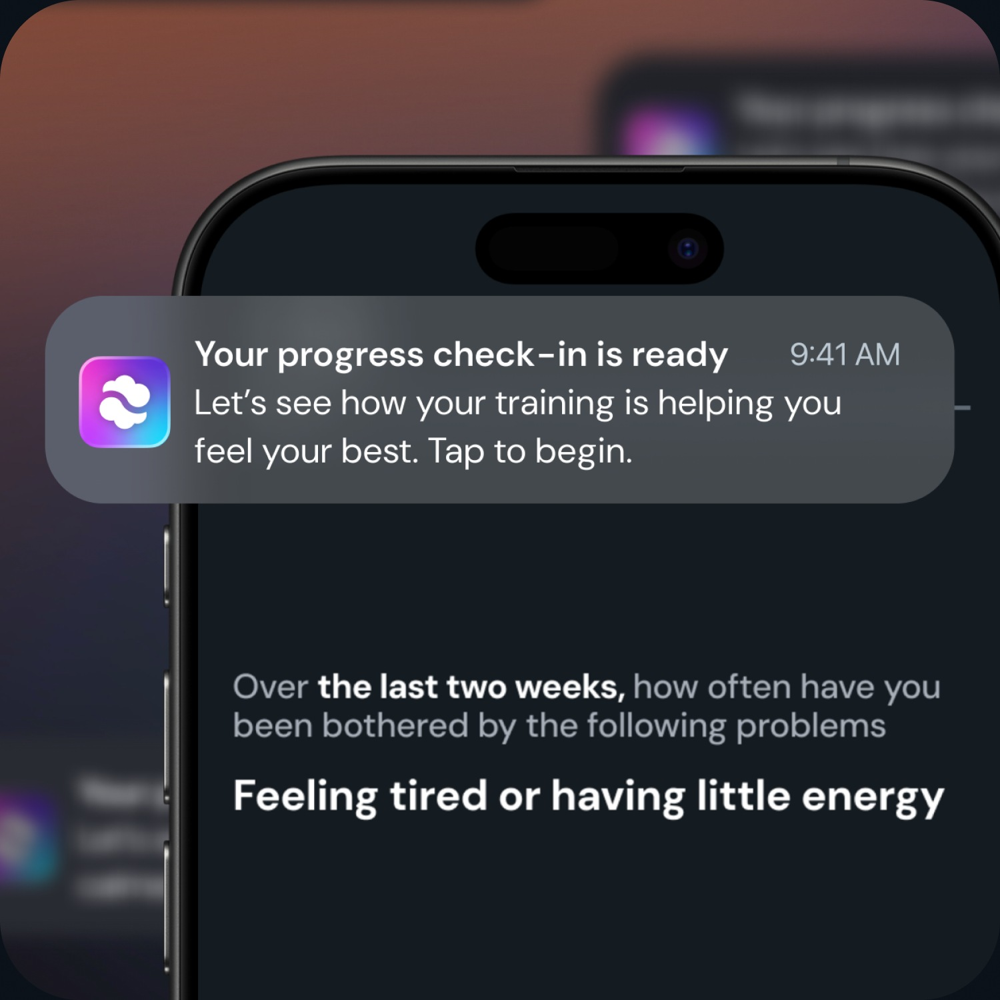
Setup during onboarding
Choose a Key Focus → set a validated baseline
Train
Continue your brain training sessions
Check-in
Complete a short check-in on your Key Focus.
See your progress
See how your results change over time.
Repeat at your chosen frequency
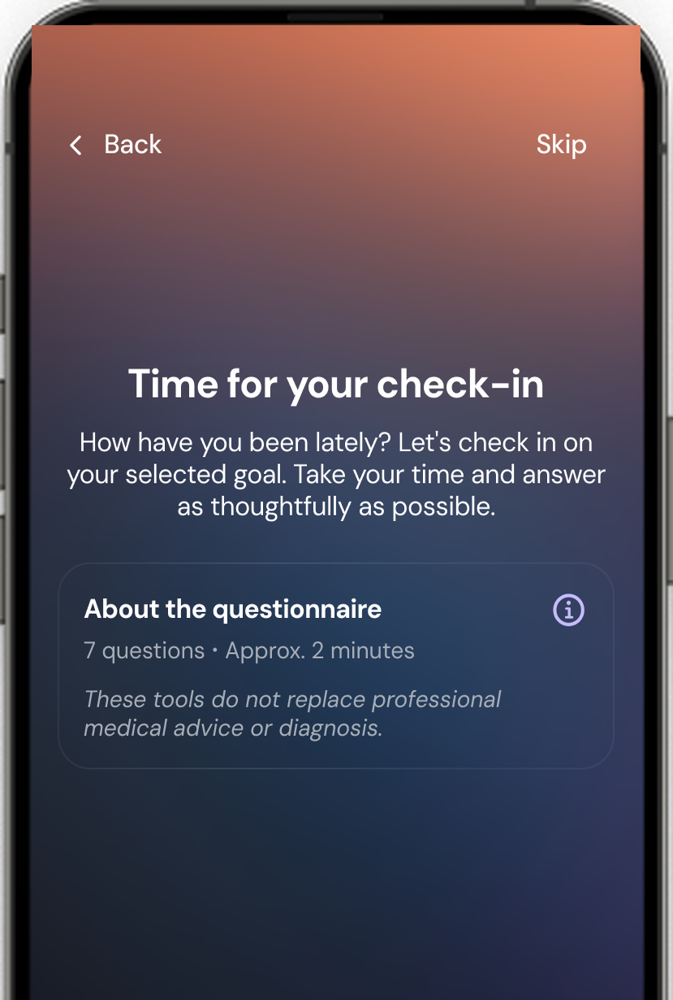
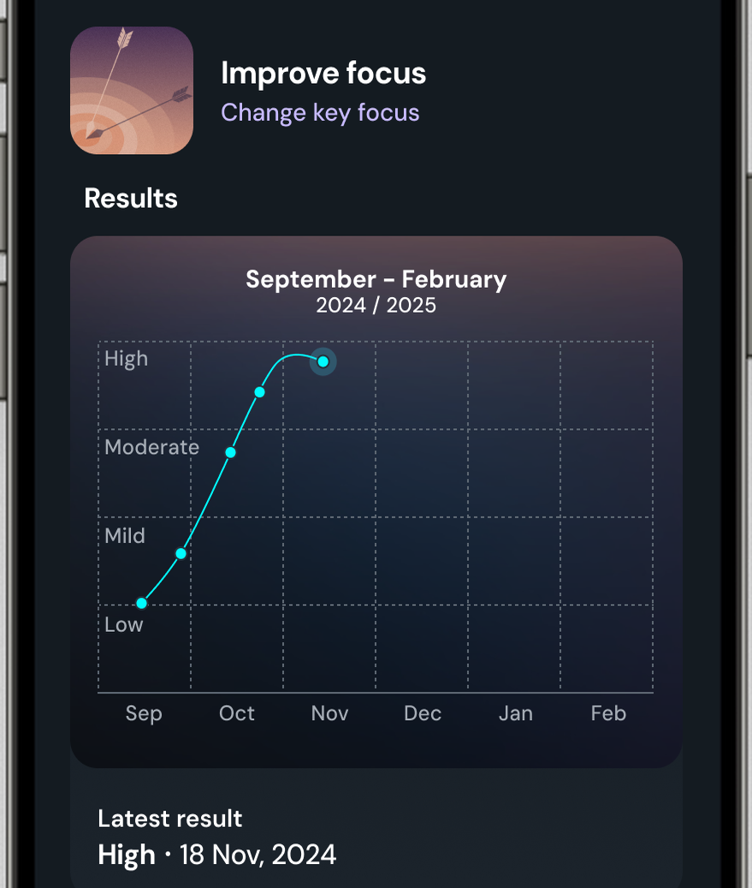
After eight weeks, users reported improvements across the areas they had selected as their Key Focus.
Based on self-reported outcomes from users who completed eight weeks of Mendi training. Measured using validated scales.
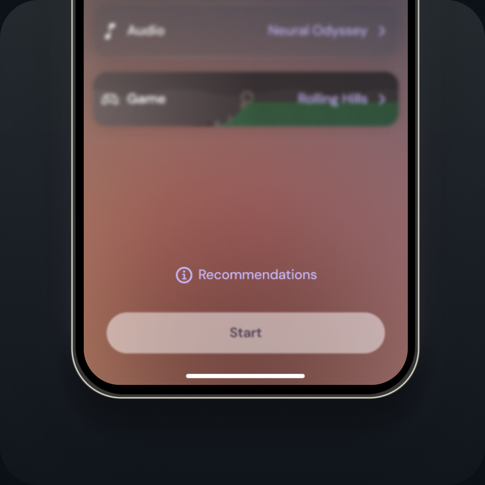
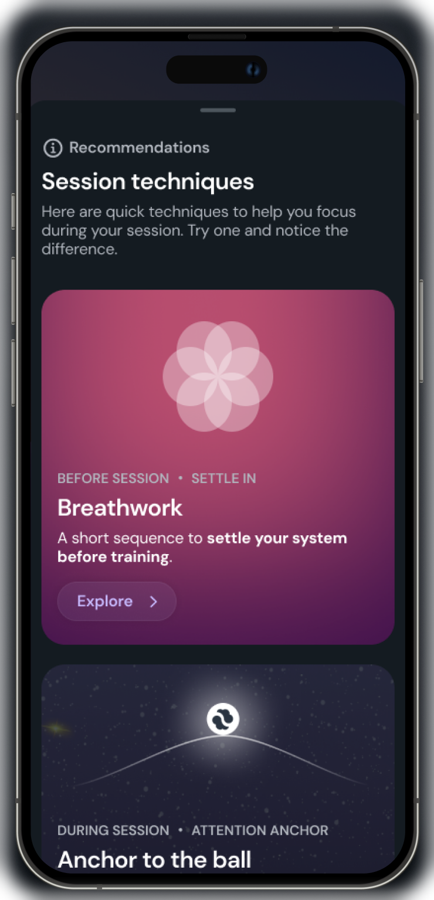
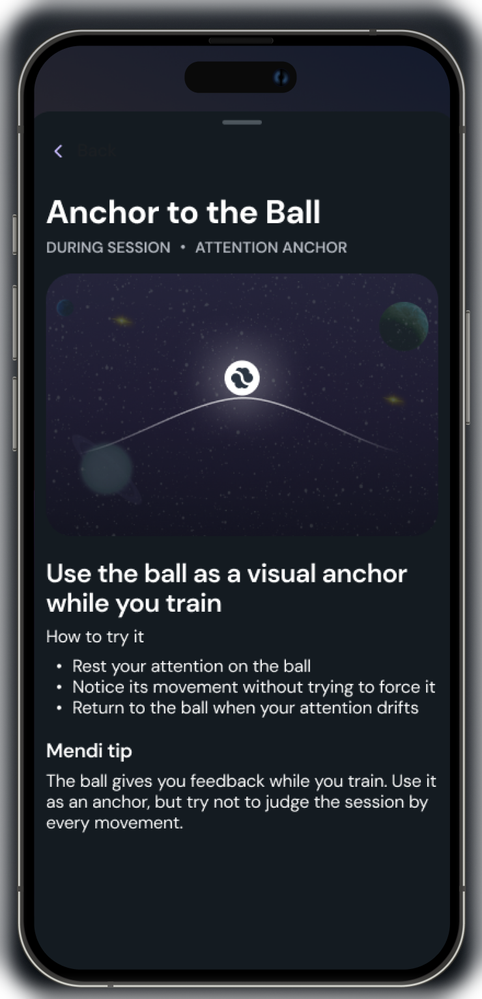
How can we teach users to train without getting in the way of training?
Neurofeedback wasn't immediately intuitive. Users needed time to learn how to influence their training, and different strategies worked for different people.
Rather than adding more instructions upfront, I designed guidance users could access during training, giving them practical techniques to try without interrupting those who had already found what worked for them.
Concept testing · 6 participants
Knowing what to do wasn't the same as being able to sustain it throughout a session.
Testing validated the direction, while revealing the next challenge: as users became fatigued, maintaining an effective approach became harder. That learning is informing the next iteration of training guidance.
How can we make progress feel clear when meaningful change takes time?
Learning how to train was only part of the challenge. Users also needed to understand how individual sessions added up to meaningful progress over time. I designed an 8-week programme to give training a clear structure, guiding users through what to do, where they are in their journey, and what comes next.
The programme is currently in early release, with behavioural data still being collected. Outcomes are not yet available to report.
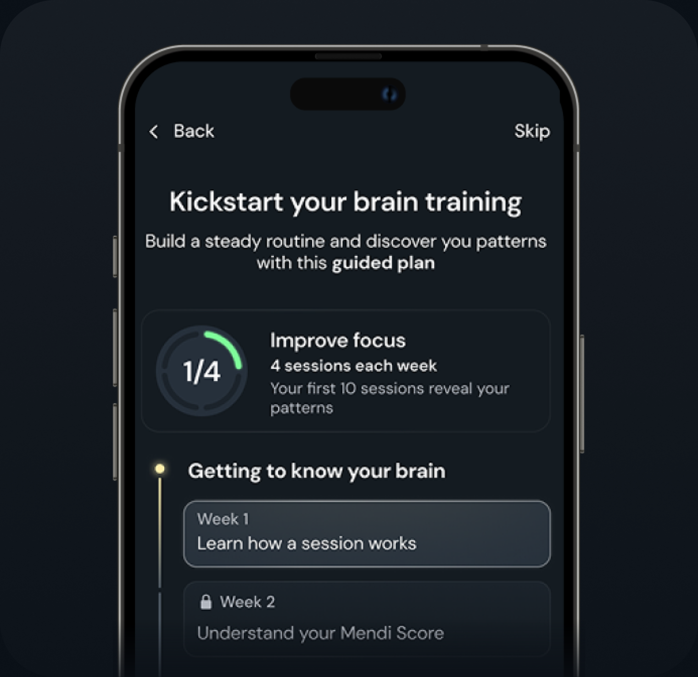
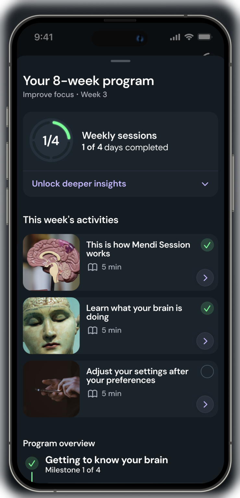
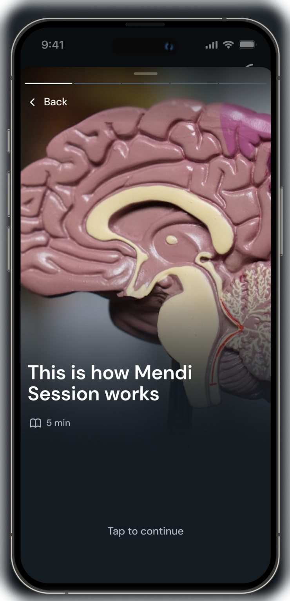
How can we encourage consistency without punishing people for how they choose to train?
Users understood that regular training mattered, but a daily streak didn't reflect how everyone trained. Research showed users could see results training 4–5 times a week, while losing a streak could cause them to disengage entirely. I redesigned streaks around different levels of commitment, helping inactive users build towards three and then five training days a week. Users can keep their training days flexible or plan specific days, while those who want to train daily can still do so.
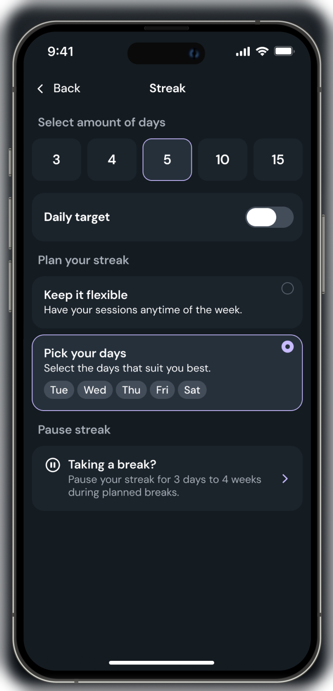
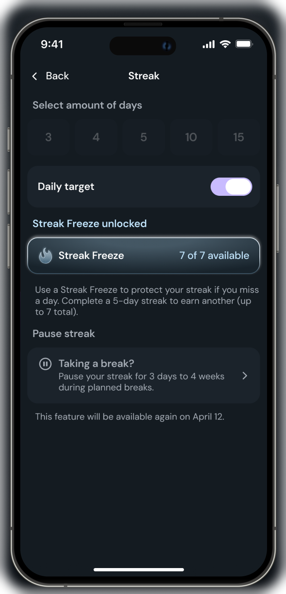
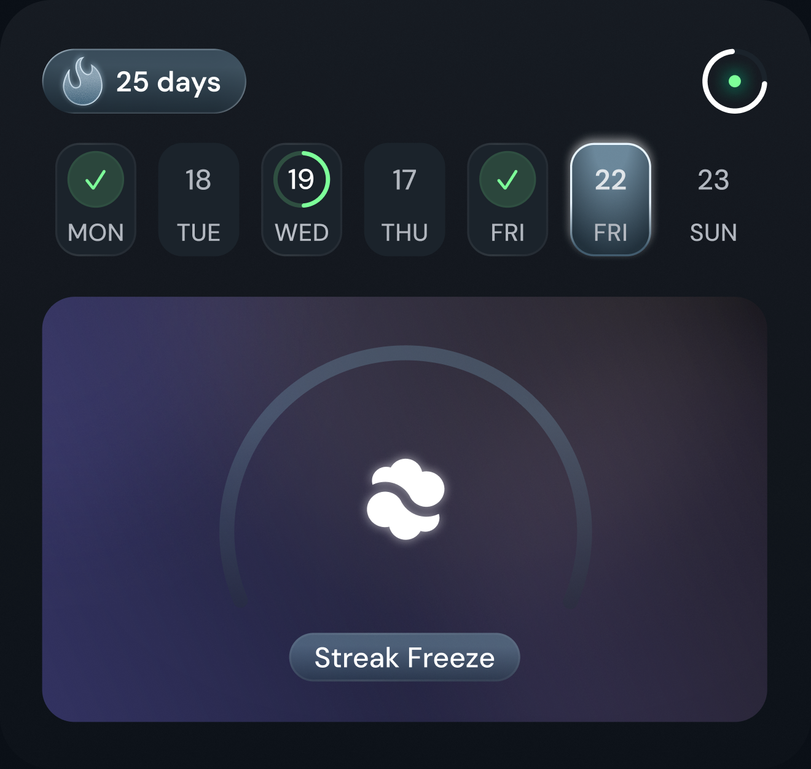
For daily users, I introduced Streak Freeze tokens to make occasional missed days less punishing. Rather than losing their progress entirely, users can protect their streak and continue building their routine.
With the foundations of the user journey in place, I turned to the core training experience — how Mendi looked, felt and responded during a session.
Explore chapter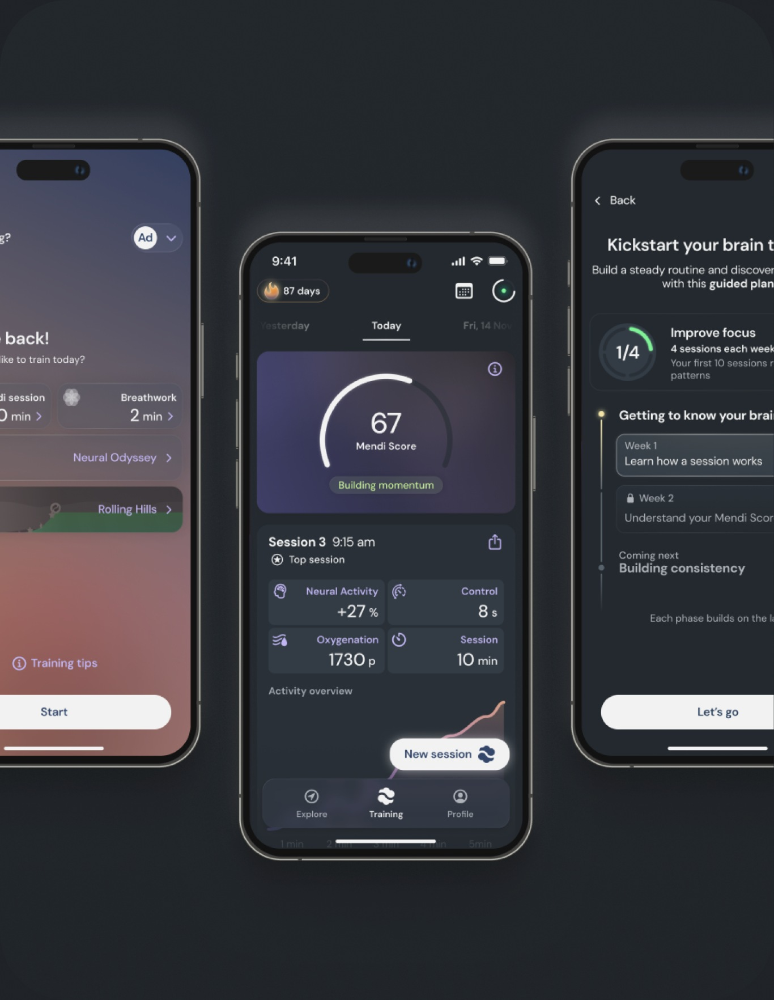